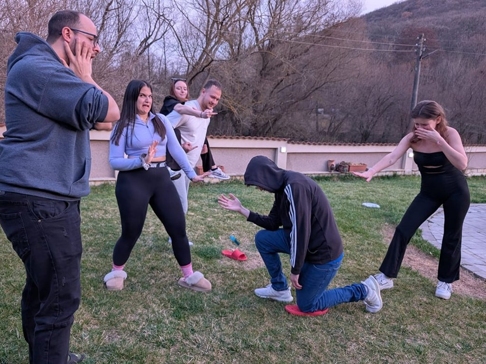
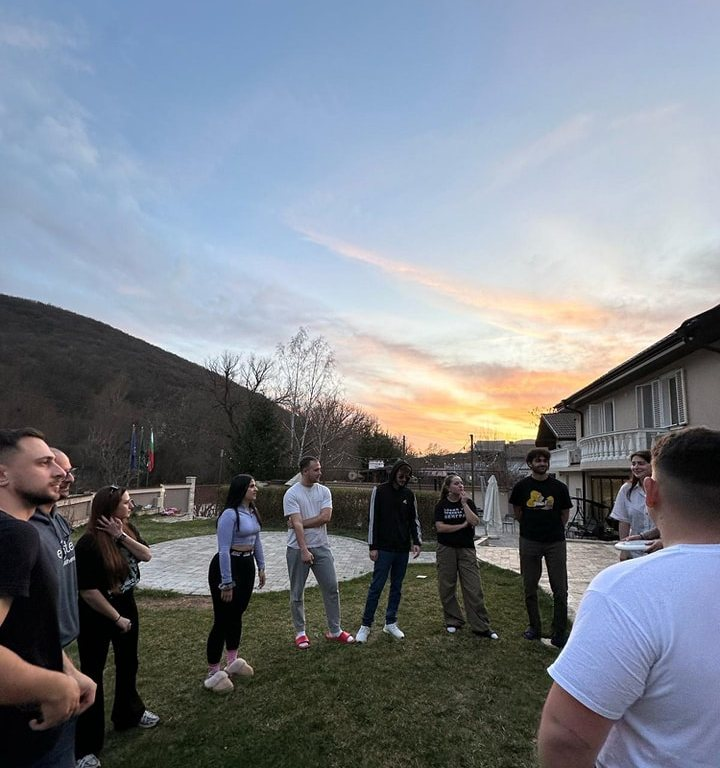
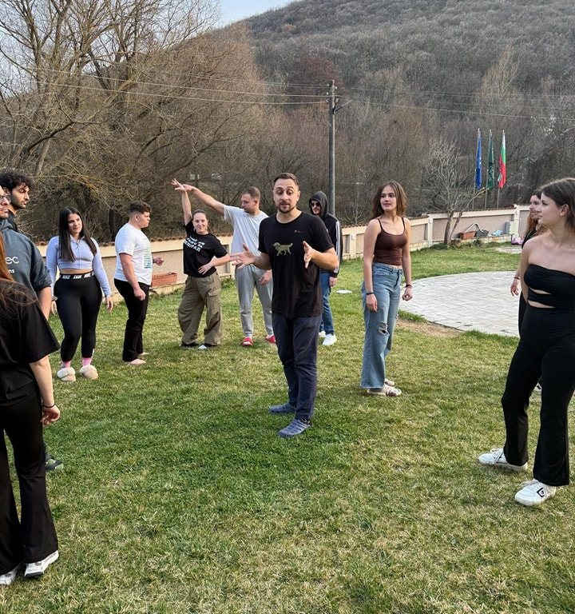

Обучителният курс „Do It Yourself!“, проведен от 11 до 19 март 2025 г. и съфинансиран от програма Еразъм+ на Европейския съюз, събра младежки работници от цяла Европа за интензивно и потапящо учебно преживяване, фокусирано върху креативни методи за фасилитация. Проведено в център Youtopia в Стара Загора, България, обучението предостави на участниците динамично пространство да задълбочат разбирането си за груповите процеси, да придобият увереност във воденето на дейности и да изследват широк набор от инструменти на неформалното образование. Програмата постави силен акцент върху театралните симулации и импровизационните упражнения, които позволиха на участниците активно да изпробват техники за фасилитация, да експериментират с груповата динамика и да получават градивна обратна връзка в реално време. Чрез интерактивни сесии и рефлексивни практики участниците развиха практически умения да управляват енергията на групата, да насърчават приобщаването и да се справят с неочаквани предизвикателства.

Обучението беше замислено не просто като курс за умения, а като трансформиращо преживяване, основано на участието и ученето от връстници. Подходът насърчаваше всеки младежки работник да поема инициатива, да създава заедно с другите хода на сесиите и да разчита на своята креативност, когато отговаря на нуждите на групата. Импровизационният театър беше използван не само като метод за енергизиране и ангажиране на участниците, но и като силен инструмент за разбиране на гъвкавата и отзивчива природа на ефективната фасилитация. Благодарение на силния компонент за изграждане на общност курсът създаде сигурна среда, в която участниците можеха да поемат рискове, да се учат един от друг и да израстват както личностно, така и професионално.


- Практически опит с инструменти за креативна фасилитация, включително импровизационен театър
- Развитие на умения в неформалното образование, справянето с конфликти и управлението на групи
- Сигурно пространство, водено от самите участници, за изследване и рефлексия върху ролите и стиловете на фасилитация